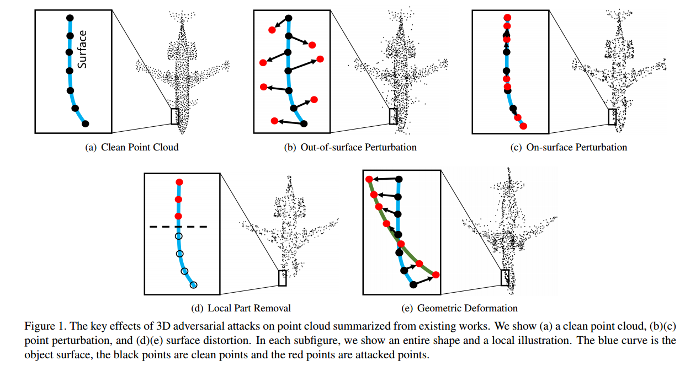
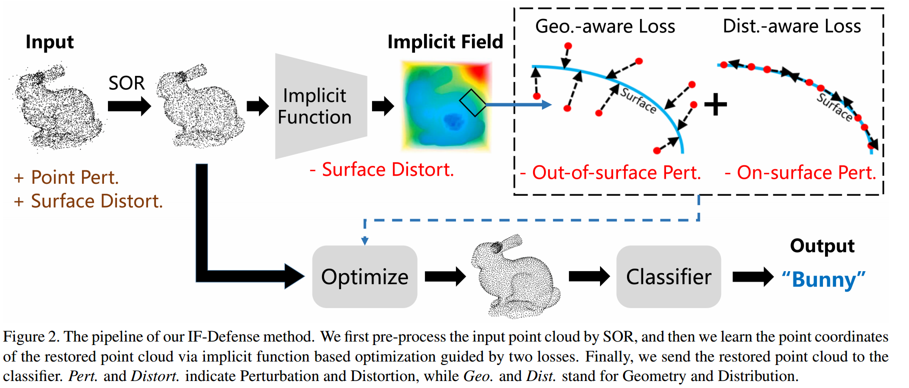
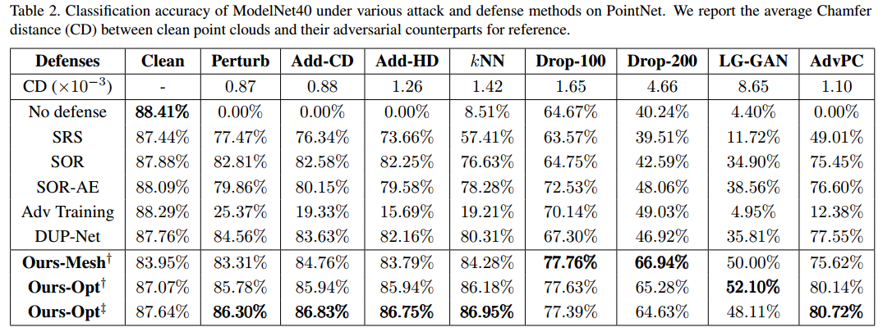
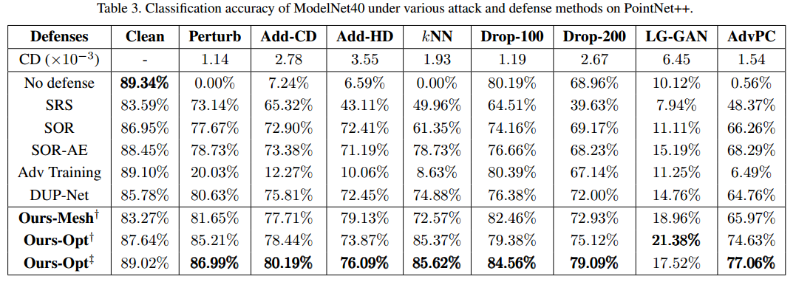
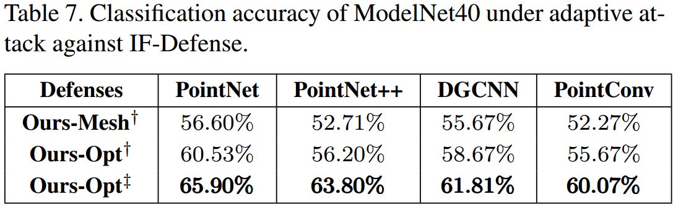
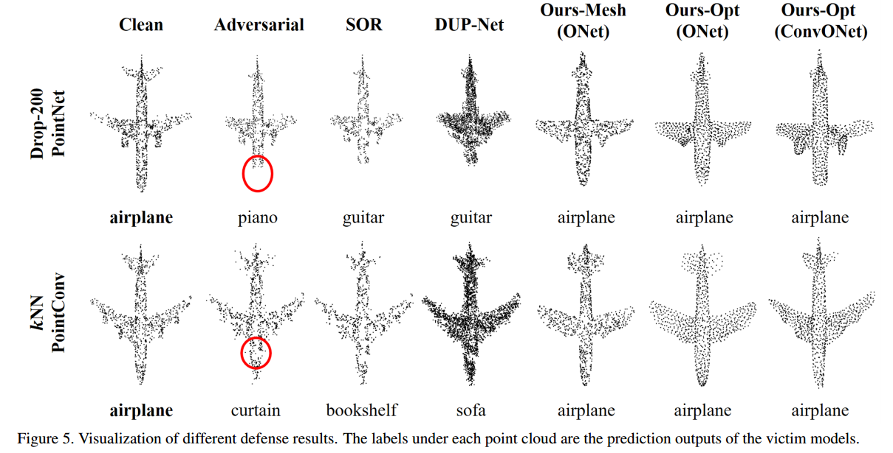

写在前面的话
在上一篇DUP-Net中，代码是TensorFlow实现的，而我们的baseLine是pytorch，修改代码和框架道阻且长，于是又search了一番，找到了这篇清华佬的新sota（很疑惑为什么idea还算novel且效果不错，却在arxiv上放了三年不发，这也是标题没有会议名称的原因），且是pytorch实现，现记录一下这篇论文的阅读过程和心得。另外，提到“相关论文”的部分由于引用不美观，遂可以自行下载论文到对应部分寻找。
0 Abstract
在摘要（abstract）部分，作者提到了对点云的两种主要3D对抗攻击，以及他们提出的IF-Defense框架来同时应对这两种攻击。
- 背景： 点云是一种在许多关键应用中广泛使用的重要的3D数据表示方式。最近的研究通过深度神经网络在处理3D点云方面取得了巨大成功。
- 问题： 但是，这些深度神经网络容易受到各种3D对抗攻击的影响，这些攻击可以总结为两种主要类型：点扰动（point perturbation）会影响局部点分布，而表面扭曲（surface distortion）会导致几何形状的显著变化。
- 方法： 本文的主要目标是同时解决上述两种攻击。为此，作者提出了一种IF-Defense框架，通过学习如何从被攻击的点云中还原干净的点云。具体而言，他们通过优化输入点的坐标，采用几何感知和分布感知的约束。前者旨在通过隐式函数恢复点云的表面，而后者则鼓励均匀分布的点。
- 实验结果： 通过实验证明，IF-Defense在一些常见的3D对抗攻击下取得了业界领先的防御性能。例如，在PointNet上，与先前的方法相比，IF-Defense对显著点删除攻击的分类准确性提高了20.02%，对LG-GAN攻击提高了16.29%。
1 Introduction
在引言（introduction）的第一段中，作者首先提到了近年来3D传感器（如LiDAR和Kinect）在自动驾驶汽车、机器人和增强/虚拟现实应用中的日益普及。这些传感器的直接输出是点云，而点云因其紧凑且表达力强的3D表示而受到越来越多的关注。点云通过使用一组无序的点表示形状，能够捕捉任意复杂的几何形状。
然而，点云的不规则数据格式使其难以直接被深度神经网络（DNNs）处理。为了解决这个问题，PointNet 首次使用多层感知器（MLPs）来提取逐点特征，并通过最大池化进行聚合。此后，许多研究设计了专门用于点云的3D深度神经网络，并取得了巨大的进展。
然而，DNNs的一个局限性是它们容易受到对抗攻击。通过对干净数据添加几乎不可察觉的扰动，生成的对抗性样本可以误导受害模型并让其高度自信地做出错误的预测。尽管在2D攻击和防御方面提出了许多算法，但在3D领域，关注较少。研究表明，点云网络如PointNet 和 PointNet++也对对抗性样本敏感。此外，最近的研究在真实场景中对自动驾驶和机器人任务进行了可实现的点云攻击，对这些关键应用造成了严重威胁。
作者通过仔细研究现有的3D对抗攻击方法，将它们的攻击效果总结为两个方面，如图所示：

- 点扰动（Point Perturbation）： 这改变了局部几何形状和逐点采样模式，将点移动到表面外以成为噪声，或沿着表面改变点的分布。这个效果类似于2D对抗性攻击，该攻击在给定预算内对每个像素添加噪声以欺骗分类器。
- 表面扭曲（Surface Distortion）： 这旨在更显著地修改点云的几何形状，通过移除局部部分或变形点云的形状。总体而言，由于几何形状的显著变化，表面扭曲难以防御，但也更容易被人类感知。
在引言的第二段中，作者提到了尽管近年来已经提出了一些用于3D对抗性防御的方法，但它们未能同时解决这两个方面的问题。作者以DUP-Net 和 Gather-vector guidance（GvG）为例进行了说明：
- DUP-Net： 该方法使用了统计离群值去除（SOR）预处理器来处理表面外的点扰动，然后使用上采样网络生成更密集的点云。然而，它无法很好地恢复点的分布并还原扭曲的表面。
- GvG方法： 该方法学习忽略嘈杂的局部特征，但在防御通过移除局部部分的攻击时失败。因此，这些方法未能有效地保护受害模型免受所有攻击的影响，尤其是最新的攻击，如显著点丢失、LG-GAN 和 AdvPC。
为了解决这个问题，作者在本文中提出了一种名为 IF-Defense 的3D对抗点云防御算法，通过学习从被攻击的点云中恢复干净点云，这更为通用，同时处理两种攻击效果。IF-Defense的流程如下图所示。首先，采用了SOR对输入点云进行预处理，然后在几何感知和分布感知的约束下直接优化输入点的坐标。具体而言，作者使用了几何感知损失，旨在去除表面外的几何变化，这类似于第一张图（b）（d）（e）中的效果。受到深度隐式函数在即使在部分观测下也能重建准确表面的成功启发，作者训练了一个在干净点云上估计物体表面的隐式函数网络。由于隐式函数输出空间的连续性，所预测的表面在局部平滑，这有助于缓解异常值的影响。分布感知损失旨在均匀分布点并消除表面上的点扰动，如第一张图（c）所示。通过最大化每个点与其k个最近邻之间的距离，以鼓励均匀的点分布。实验结果表明，IF-Defense在多种3D对抗攻击下持续优于PointNet、PointNet++、DGCNN、PointConv和RS-CNN的现有防御方法。
2 Related Works
在相关工作（related works）中，前两段主要介绍了在点云上的深度学习和3D对抗攻击方面的研究。
Deep learning on point clouds:
- PointNet 被认为是第一个直接操作在3D点云上的深度学习算法。该算法通过多层感知器（MLPs）对点云进行处理，提取点云中的特征。
- PointNet++ 在PointNet的基础上通过利用局部信息进一步提高了性能。
- Dynamic Graph CNN（DGCNN）构建了kNN图并应用EdgeConv来捕捉局部几何结构。
- 近年来，文献中提出了越来越多基于卷积的方法，这些方法使用预测的卷积核权重在相邻点之间执行卷积操作。尽管这些点云网络取得了令人满意的结果，但它们对对抗攻击很敏感，需要防御方法来提高其鲁棒性。
3D adversarial attack:
- 存在三类现有的3D对抗攻击方法：基于优化的方法、基于梯度的方法和生成方法。
- 基于优化的方法中，首次提出使用C&W攻击框架来生成对抗性点云，通过点扰动和添加实现。与此不同，相关论文提出添加kNN距离约束、剪切和投影操作，生成对抗性点云以提高防御性。此外，相关论文提出了AdvPC，利用点云自编码器（AE）来提高对抗性样本的传递性。由于预算有限，这些攻击主要引入点扰动。
- 对于基于梯度的方法，相关论文扩展了快速/迭代梯度方法以扰动点坐标。此外，相关论文通过构建基于梯度的显著性图，开发了一种点丢弃攻击，该攻击将删除重要的局部部分。
- LG-GAN 是一种基于生成的3D攻击方法，利用GANs生成受输入目标标签引导的对抗性点云。文中总结了现有3D攻击与攻击效果之间的对应关系。
3D adversarial defense:
- 相关论文使用对抗训练提高模型的鲁棒性，通过同时在干净和对抗点云上进行训练。相关论文提出了从2D防御中采用的高斯噪声和点量化方法。他们还引入了一种简单的随机采样（Simple Random Sampling，SRS）方法，从输入点云中随机采样子集。最近，相关论文提出了一种统计离群值去除（Statistical Outlier Removal，SOR）方法，该方法移除具有较大kNN距离的点。他们还提出了DUPNet，这是SOR和点云上采样网络PU-Net的组合。SOR的非可微性也提高了其鲁棒性。则不是设计一个用于恢复对抗性样本的预处理模块，而是利用点云的内在属性，开发了PointNet++的一个变体，该变体可以识别并丢弃输入中的对抗性局部部分。尽管这些防御方法对简单攻击有效，但对更复杂的方法的性能相对较差，这是因为它们未能同时解决上述两种攻击效果。
在这两段中，第三段介绍了一些3D对抗防御方法，包括对抗训练、SOR方法、DUPNet等，但指出它们对更复杂的攻击方法的性能相对较差。第四段则引入了隐式表示方法，说明其在表示复杂几何结构和从部分观测中重建完整形状方面的优势。这为后文介绍的IF-Defense方法提供了一些背景。
3. Approach
在本节中，首先介绍了一种通过重新网格划分和重新采样的直观点云恢复方法。然后，提出了一种学习算法来直接优化输入点的坐标，以进一步提高 IF-Defense 的鲁棒性。最后，展示了方法的实现细节。
3.1 Re-meshing based IF-Defense
为了从现有的点云中恢复出干净的点云，一种直观的想法是首先从嘈杂的点云中重建网格，然后在网格上重新采样点。受到隐式函数的最近成功启发，作者采用了 ONet （占用网络）和 ConvONet（卷积占用网络）进行3D形状重建。这些网络的编码器以点云作为输入，获取形状的潜在编码，而解码器通过查询3D坐标输出学到的隐式场。使用经过SOR预处理的点云，作者通过训练好的隐式函数网络来估计点云的隐式表面。由于隐式模型在干净数据上进行了预训练，解码器的输出空间位于完整且准确的形状流形上，有助于消除表面外的几何变化的攻击效果。有了恢复表面的隐式表示，下一步是还原原始的干净点云，以消除攻击效果。作者明确地使用 Marching Cubes 算法将形状重建为网格，然后使用与训练数据相同的点采样方法从网格中采样，得到恢复的点云。具体的 pipeline 如下图所示：

3.2 Optimization based IF-Defense
这一段介绍了基于优化的IF-Defense（Implicit Function Defense）方法，以解决依赖于重新构建的方法可能存在的问题。在前一部分，作者提到了重新构建形状表面，并通过重新采样来生成还原的点云。然而，对于基于隐式函数的方法，从嘈杂的点云中准确地重建网格仍然是一个具有挑战性的问题。特别是，一些几何结构，如物体的细长部分，可能难以通过隐式函数准确地捕捉。此外，攻击点云中的噪声可能导致不准确的形状潜在编码，进而增大重建误差。
为了解决这些问题，作者提出了一种基于学习的点云恢复算法，该算法直接优化点的坐标，而不是采用重新构建和重新采样的两步过程。
具体步骤：
- 初始化防御点云作为输入，根据需要，通过随机复制或子采样来保持与训练数据相同数量的点。
- 不再从隐式场中重建网格，而是直接学习干净点云的坐标。
- 通过优化两个损失函数进行学习：几何感知损失和分布感知损失。
几何感知损失：$$\mathcal{L}_{G}=\sum_{i=1}^N \mathcal{L}_{c e}\left(f_\theta\left(\boldsymbol{z}, \boldsymbol{x}_{\boldsymbol{i}}\right), \tau\right)$$
- $N$ 是点云中点的数量，$\mathcal{L}_{G}$ 是几何感知损失，$\mathcal{L}_{ce}$ 是二元交叉熵损失函数，$f_\theta\left(\boldsymbol{z}, \boldsymbol{x}_{\boldsymbol{i}}\right)$ 是隐式函数，它接收形状潜在编码 $\boldsymbol{z}$ 和点坐标 $\boldsymbol{x}_{\boldsymbol{i}}$ 作为输入，输出在该位置的占用概率，$\mathcal{L}_{ce}$ 是二元交叉熵损失函数，它在实际应用中通常用于测量两个概率分布之间的距离。在这里，它用于衡量模型的预测概率与目标概率之间的差异，目标概率是由超参数 $\tau$ 控制的。因此，$\mathcal{L}_{G}$ 是对所有点 $i$ 的二元交叉熵损失的总和。该损失的目标是将优化后的点的预测占用概率 $\left(f_\theta\left(\boldsymbol{z}, \boldsymbol{x}_{\boldsymbol{i}}\right)\right)$ 接近一个超参数 $\tau$，这个超参数用于控制目标对象的边界。
- 最终目标是鼓励优化后的点位于形状表面上。对于每个点，使用形状潜在编码和点坐标作为输入，通过隐式函数输出在该位置的占用概率。利用二元交叉熵损失，迫使优化后的点逼近表面。
分布感知损失：$$\mathcal{L}_{D}=\sum_{i=1}^N \sum_{\boldsymbol{x}_{\boldsymbol{j}} \in k n n\left(\boldsymbol{x}_{\boldsymbol{i}}, k\right)}-\left|\boldsymbol{x}_{\boldsymbol{i}}-\boldsymbol{x}_{\boldsymbol{j}}\right| \cdot e^{-\left|\boldsymbol{x}_{\boldsymbol{i}}-\boldsymbol{x}_{\boldsymbol{j}}\right|^2 / h^2}$$
- $N$ 是点云中点的数量，$\mathcal{L}_{D}$ 是分布感知损失，$\boldsymbol{x}_{\boldsymbol{i}}$ 是点云中的第 $i$ 个点的坐标，$k$ 是最近邻点的数量，$knn(\boldsymbol{x}_{\boldsymbol{i}}, k)$ 是点 $\boldsymbol{x}_{\boldsymbol{i}}$ 的 $k$ 个最近邻点的集合，$\left|\boldsymbol{x}_{\boldsymbol{i}}-\boldsymbol{x}_{\boldsymbol{j}}\right|$ 是点 $\boldsymbol{x}_{\boldsymbol{i}}$ 与其最近邻点 $\boldsymbol{x}_{\boldsymbol{j}}$ 之间的欧氏距离，$h$ 是与距离相关的衰减率的超参数。
- 最终目标是最大化点到其k个最近邻点（kNN）的距离，以鼓励更均匀的点分布；然后使用指数项惩罚过于接近的点，其中h是与距离相关的衰减速率的超参数；同时通过最小化包含两个术语权重的目标函数来优化点坐标。
- 指数项在这里被用作一个权重，其作用是对距离的远近进行惩罚。在分布感知损失的上下文中，通过指数项的引入，对距离较近的点进行了更强烈的惩罚，而对距离较远的点进行了较弱的惩罚。具体到公式，如果点之间的距离很近，那么指数项的值将接近1，因此相应的权重会较大，从而对损失贡献更多。相反，如果点之间的距离较远，指数项的值将接近0，导致相应的权重较小，对损失的贡献较小。通过这种方式，指数项惩罚的效果是使得优化算法更倾向于生成具有更均匀分布的点云，而不是在局部区域过于密集。这对于点云的鲁棒性和均匀性都是有益的，因为过于密集的点分布可能不利于模型的性能和泛化能力。
最终通过使用平衡两项权重的超参数 λ 最小化以下目标函数来优化点坐标：
$$\mathcal{L}(\hat{X})=\mathcal{L}_{G}+\lambda \mathcal{L}_{D}$$
通过这种方式，IF-Defense直接学习如何优化点云，以更好地适应隐式函数的输出，从而提高防御的鲁棒性。
3.3. Implementation Details
在这一部分，作者提供了关于实现细节的一些信息，主要涉及到隐式函数网络的选择和优化过程中的一些超参数设置。
- 隐式函数网络的选择：
- 作者采用了ONet 和 ConvONet 作为隐式函数网络的实现。
- 这两个网络被广泛用于3D形状重建和点云处理领域。
- 网络的训练：
- ONet 和 ConvONet 在IF-Defense中进行了训练，训练时没有使用类别标签，即是无监督学习。
- 首先，在ShapeNet数据集上进行了预训练。
- 然后，在ModelNet40数据集上进行了微调。
- 优化过程中的超参数设置：
- 对于基于优化的IF-Defense，作者采用的超参数为：
- $\tau$（目标对象的边界超参数）被设置为0.2，这个值的选择是由之前的工作建议的。
- 参数 $h$ 和 $k$ 分别被设置为0.03和5，这是根据之前的点云上采样工作中的设定。
- 参数 $\lambda$ 被设置为500，这是在目标函数中平衡两个损失项的权重。
- 优化的过程中，使用了Adam优化器，学习率设置为0.01。
- 优化的迭代次数为200次。
- 对于基于优化的IF-Defense，作者采用的超参数为：
4. Experiments
开始先介绍了实验的背景和设置，主要包括使用的数据集、受害模型、攻击方法和防御基线：
- 数据集：
- 实验使用了ModelNet40形状分类基准测试集，该数据集包含来自40个人造物体类别的12,311个CAD模型。
- 使用了官方划分，其中9,843个模型用于训练，2,468个用于测试。
- 数据预处理：
- 对于每个对象，从表面均匀采样了1024个点，并将它们标准化到一个单位球上。
- 受害模型：
- 作为受害模型，采用了PointNet、PointNet++、DGCNN、PointConv 和RS-CNN。
- 对于 PointNet++ 和 PointConv，使用了单一尺度分组（SSG）策略。
- 攻击方法：
- 使用了多种攻击方法，包括点扰动和单个点添加攻击、kNN攻击、点丢弃攻击，以及两种最近提出的攻击方法 LG-GAN 和 AdvPC。
- 防御基线：
- 采用了多个防御基线，包括SRS、SOR、DUPNet 和对抗训练。
- 对于对抗训练，所有受害模型都在干净数据和由点扰动生成的对抗性样本上进行训练。
- 还训练了一个点云自编码器（AE），其中包含一个SOR预处理器，作为名为SOR-AE的基线防御。
- 实验目标：
- 实验的目标是测试有针对性的攻击，并在防御后报告分类准确性。
- 较高的准确性表示更好的防御性能。
4.1. Comparison with the State-of-the-art Methods
下面两张表展示了 PointNet 和 PointNet++ 上各种攻防方法下的分类准确率。实验结果表明，优化方法（Ours-Opt）在各种攻击下一直优于重新网格化方法（Ours-Mesh）。总体而言，IF-Defense在多个攻击下都取得了相对较小的提升，对于kNN、点丢弃、LG-GAN和AdvPC攻击的性能提升明显，因为这些攻击主要引入在表面上的扰动或显著的表面畸变。这表明该方法对于具有表面扭曲或显著形状畸变的攻击具有很好的适应性。


4.2. Ablation Study
在这一部分，作者进行了消融实验以进一步研究IF-Defense方法的性能和稳健性。以下是对该部分内容的解释：
- Distribution-aware loss weight：
- 本部分研究了优化方法中的超参数λ（Distribution-aware loss的权重）对IF-Defense性能的影响——使用ConvONet，并将λ的取值范围设定在0到1,000之间。实验结果显示，随着λ的增加，准确性首先提高，然后开始下降。在大多数情况下，λ = 500时获得了最佳准确性。
- 分布感知损失使点在表面上均匀分布。当λ较小时，点无法在整个对象上均匀分布；而λ较大时，由于忽视几何感知损失，无法准确捕捉表面。实验显示了选择适当的λ以平衡准确表面和均匀点分布之间的重要性。
- Adaptive attack：（后续工作再研究附录，现在不是重点）
- 为了研究IF-Defense的最坏情况下的性能，作者设计了一种自适应攻击。
- 由于SOR预处理器和优化过程是不可微的，无法使用交叉熵损失进行梯度上升。因此，使用两个损失项来扭曲由隐式函数网络预测的隐式场。
- 与现有攻击相比，自适应攻击导致了更大的性能下降。
- 自适应攻击的结果：
- 表7总结了对抗自适应攻击的防御结果。自适应攻击引起的性能下降较大，但是Ours-Opt与ConvONet仍在所有四个受害模型上实现了超过60%的分类准确性，如下表所示。
- 尽管自适应攻击扭曲了由隐式函数网络编码器提取的形状潜在代码，但解码器仍然可以将其投影回到干净的形状，减轻了扭曲效果。

4.3. Black-Box Attacks and Defenses（黑盒情况，后续工作需要再仔细阅读）
4.4. Qualitative Results
在这一部分，作者通过图示展示了使用SOR、DUP-Net和IF-Defense三种变体的两组防御结果。如图所示：

- 第一行结果 - Point Dropping Attack on PointNet：
- 第一行展示了在PointNet上进行点丢弃攻击的结果。在敌对样本中，飞机的头部被丢弃。
- SOR无法防御这种攻击，因为它只是从点云中移除更多的点。DUP-Net通过PU-Net进一步上采样点云，但上采样的点都在输入点附近，无法恢复丢失的部分。
- 相反，所有三种IF-Defense方法成功地通过延伸前端形成头部来恢复形状，证明了在部分观测下重建整个形状的有效性。
- 第二行结果 - kNN Attack on PointConv：
- 第二行展示了在PointConv上进行kNN攻击的结果。由于kNN约束，大部分点沿着表面被扰动，导致点分布发生显著变化。
- DUP-Net无法恢复原始的点分布，因为它输出了一个更密集的点云。
- Ours-Mesh从重建的网格中使用与干净数据相同的采样策略重新采样点，而Ours-Opt由于分布感知损失而输出均匀分布的点。
- PointConv在两种情况下都能正确分类飞机。
5. Conclusion
在本文中，提出了一个名为IF-Defense的通用框架，用于防御3D点云中的对抗攻击，同时解决了点扰动和表面扭曲效应。我们的IF-Defense通过根据几何感知和分布感知损失优化受攻击点的坐标来学习恢复干净的点云，从而通过隐式函数恢复表面上的扭曲，并通过优化消除点分布上的扰动。广泛的实验证明，IF-Defense在PointNet、PointNet++、DGCNN、PointConv和RS-CNN上对抗各种3D点云对抗攻击的性能始终优于现有的对抗性防御方法。
附录补充实验细节
混合训练
当使用 IF-Defense 模块在干净的点云上进行测试时，纯粹基于干净数据训练的受害者模型的准确性降低了高达 5%。（这其实表面在没有攻击的情况下，此时的防御策略反而会成为另一种“攻击”）为了消除干净点云和防御点云之间的域差距，本文在干净点云和防御点云上训练了受害者模型（称为混合训练），并使用它们来评估 IF-Defense 的性能。复现后发现，采用混合训练后再采用防御策略，性能下降仅仅为1%左右。
名词解释及问题
深度隐式函数
深度隐式函数（Deep Implicit Function）是一种深度学习模型，其目标是从输入数据中学习表示隐含函数。这个隐含函数通常用于表示输入数据的结构或特征，而不是显式地指定输入与输出之间的映射关系。在3D重建中，深度隐式函数的一种应用是学习表示物体的表面。
在这里，作者提到的深度隐式函数是用于估计点云表面的模型。即使在部分观测下能够重建准确表面的原因在于，深度隐式函数的网络结构允许它对输入数据进行端到端的学习，从而在学习过程中捕获到输入数据的复杂结构和关系。
具体而言，深度隐式函数在处理点云时，能够从局部观测中学到物体的全局形状。这是因为深度隐式函数不仅仅是学习输入数据到输出的映射，还学习了输入数据的分布和结构，使其能够在遇到局部缺失或不完整的观测时，通过整合学到的全局信息来还原准确的表面。
总的来说，深度隐式函数的优势在于其对输入数据的灵活建模，使其在处理点云等不规则、不完整数据时表现出色，能够在部分观测下重建准确的表面。这种特性使其成为处理3D点云数据和进行形状重建任务的有效工具。
EdgeConv
EdgeConv是Dynamic Graph CNN（DGCNN）中的一种卷积操作。DGCNN是一种基于图的深度学习架构，专门用于处理点云数据。EdgeConv是DGCNN中用于捕获局部几何结构的关键组件。
EdgeConv的基本思想是通过构建kNN（k最近邻）图，利用边（edges）上的信息来进行卷积。具体而言，它执行以下步骤：
- 构建kNN图： 对于每个点，找到其k个最近邻的点，构建一个点云中的kNN图，其中每个点与其k个最近邻连接。
- EdgeConv卷积操作： 对于每个点，通过聚合其k个最近邻点的特征来更新该点的特征。这一过程涉及到对每个边的信息进行聚合，以产生新的特征表示。
EdgeConv通过使用邻接矩阵来建模点之间的关系，允许网络有效地捕获点云的局部结构信息。这种操作在处理点云数据时特别有用，因为点云中的点之间的拓扑关系和局部几何结构对于理解物体的形状和特征至关重要。
Marching Cubes
Marching Cubes（MC）是一种用于从三维数据集生成三角网格的算法，主要应用于等值面的提取。这个算法最初是由William E. Lorensen和Harvey E. Cline于1987年提出的，用于可视化医学图像中的等值面。
算法的基本思想是将三维数据集划分为小的立方体单元，并在每个立方体内部根据立方体的顶点值与等值面的关系生成三角形。通过对整个数据集的扫描，MC算法能够创建一个连续的三角网格，准确地表示等值面的形状。
具体步骤如下：
- 将三维数据集划分为立方体单元，每个立方体由8个顶点组成。
- 对每个立方体，通过比较顶点的数值与等值面的关系，确定生成哪些三角形。
- 根据确定的三角形，计算它们的顶点坐标。
- 将生成的三角形加入到最终的三角网格中。
Marching Cubes算法是一种常用于体数据可视化和三维重建的方法。在本文中，它被用来将由隐式函数重建的形状表面显式表示为一个三角网格，从而得到还原的点云。这个步骤是IF-Defense方法中的一部分，用于恢复干净的点云。